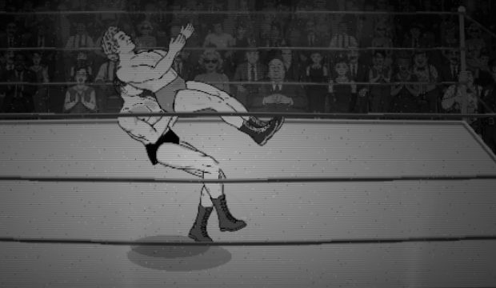
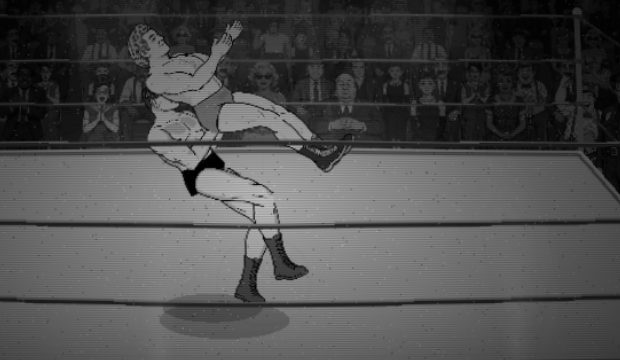
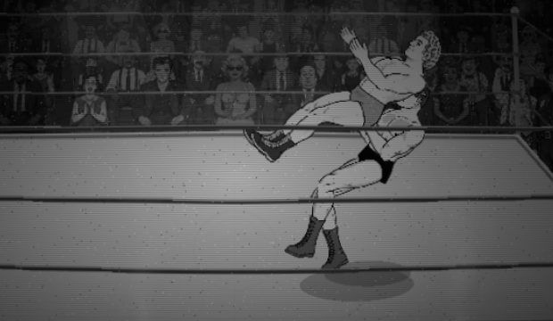
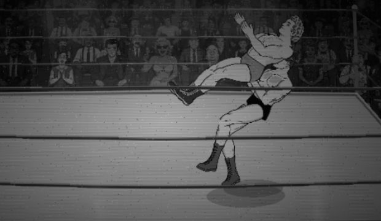
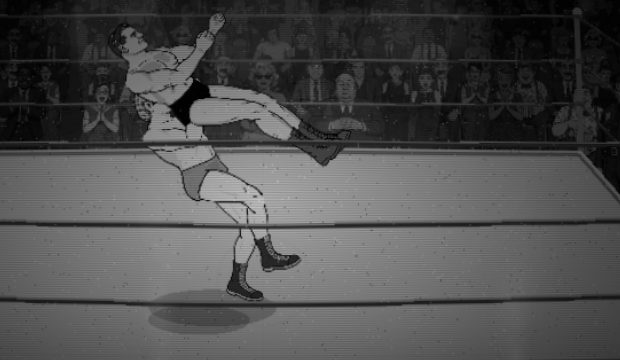
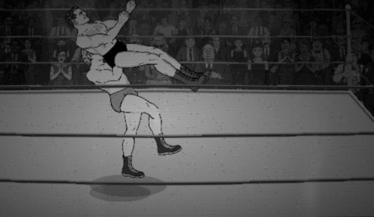
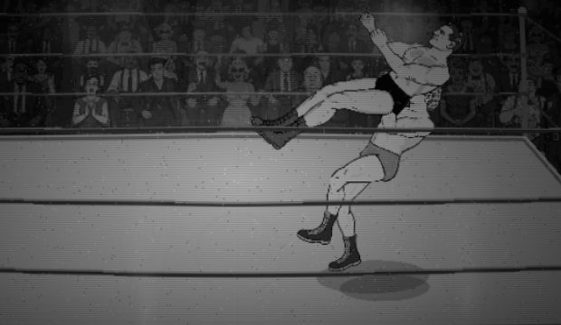
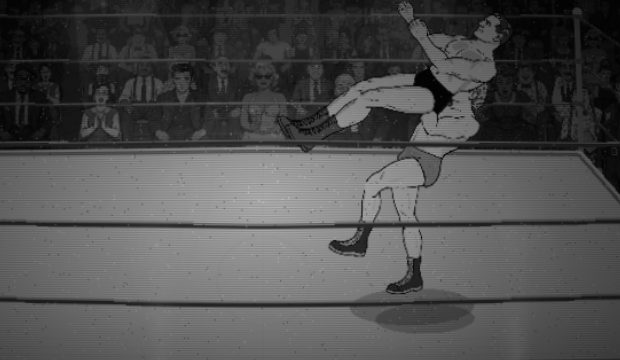

G4c-a, revision 6: where the near knee chambers (T4c.4l-T4c.4n)
For Derek to judge. Left: Codex's peak, the knee comes up during the lift (default, ATOMIC.chamber='lift'). Right: the thigh chambers over the first 0.14 s of the 0.24 s hitch (?atomicChamber=hitch). Same height, duration 1.28 s, drop, damage 0.73 s, landing folds, camera; only the chamber timing differs. Pick one, and say whether 0.24 s at the top is right. I do not call either one right.
Misses first
- 'hitch' is worse on George: his support (planted) sole drifts 19.5 px (lift: 0.1); his near sole is 16.1 px off the mat before the lift ends. A second plant on the near foot holds for Lou (0.2 px) but George cannot reach; dropped.
- Both feet are not on the mat through the lift in 'hitch' (Lou: near sole 2.9 px up, 32.1 px slid by the lift's end).
- Receiver pelvis over the hitch: lift 0 px; hitch Lou 6.18, George 0.34 px (want under 2). One lift value (13) cannot zero both rigs: 8 gives 14.8 / 9.0, 20 gives 3.0 / 12.5.
- Carried from r4/r5, not touched: the receiver's near leg is near horizontal and straight at the peak; snapmare release step 32-36 px; snapmare near knee 20-30 px over the mat at impact; D12 overlap below.
Table (lift / hitch)
| pair (facing left; right is identical) | near sole by L, lift | near sole by L, hitch | far (support) sole, lift | far sole, hitch | receiver pelvis range over the hitch (px) | attacker joint step at chamber end; at impact (px) | near thigh at T (rad) | seat gap at impact (px) | support sole drift (px) |
|---|
| Lou on George | 26 high / 76 slid | 2.9 high / 32.1 slid | 0.1 high / 0.1 slid | 0 high / 0 slid | 0 / 6.18 |
0 / 0.22; impact 27.26 / 30.95 | 1.25 / 1.25 | 0 / 0 | 0.2 / 0.2 |
| George on Lou | 37.4 high / 66.2 slid | 16.1 high / 29 slid | 0 high / 0 slid | 4.7 high / 19 slid | 0 / 0.34 |
0 / 0.22; impact 20.61 / 23.37 | 1.25 / 1.25 | 0 / 0 | 0.1 / 19.5 |
D12 raw per beat (below-belt / torso on torso / total px²):
Lou on George, lift: lift 2828 / 219 / 3651 (11 torso frames); drop 329 / 84 / 1050 (17 torso frames); sell 1390 / 155 / 3768 (4 torso frames)
Lou on George, hitch: lift 2751 / 219 / 3579 (11 torso frames); drop 329 / 104 / 1076 (17 torso frames); sell 1392 / 154 / 3767 (4 torso frames)
George on Lou, lift: lift 2631 / 485 / 3661 (23 torso frames); drop 563 / 607 / 1818 (18 torso frames); sell 1311 / 685 / 3457 (7 torso frames)
George on Lou, hitch: lift 2642 / 485 / 3641 (23 torso frames); drop 561 / 651 / 1867 (18 torso frames); sell 1286 / 743 / 3493 (7 torso frames)
Gates: knee audit 0 saturated and no new failures for both variants, waistlock_throws_assert, focused tests pass. Not run for this page: full suite (at the commit gate only).
Loops (normal speed) and the peak frame
chamber in the lift (Codex), Lou on George, attacker first facing left
chamber in the hitch, Lou on George, attacker first facing left

lift: peak 0.67 s

hitch: peak 0.67 s
chamber in the lift (Codex), Lou on George, attacker first facing right
chamber in the hitch, Lou on George, attacker first facing right

lift: peak 0.67 s

hitch: peak 0.67 s
chamber in the lift (Codex), George on Lou, attacker first facing left
chamber in the hitch, George on Lou, attacker first facing left

lift: peak 0.67 s

hitch: peak 0.67 s
chamber in the lift (Codex), George on Lou, attacker first facing right
chamber in the hitch, George on Lou, attacker first facing right

lift: peak 0.67 s

hitch: peak 0.67 s